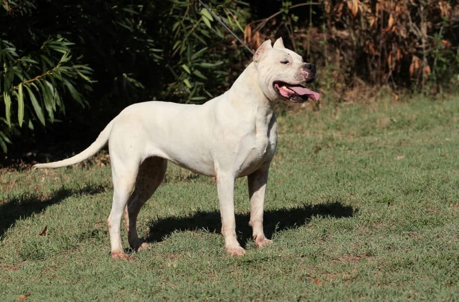
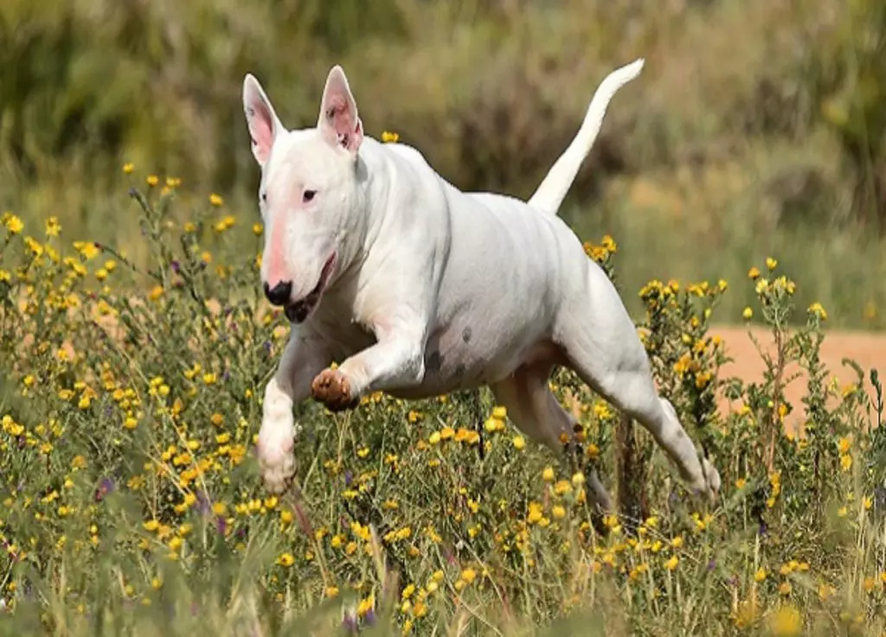
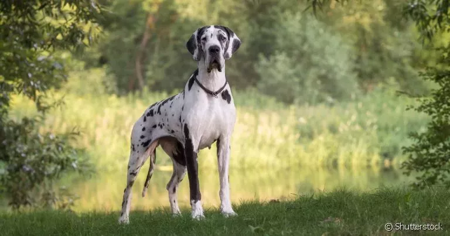

Cães de guarda
-

-

- 
- 
- 
Doberman
Atlético e ágil, o Doberman é um dos preferidos quando falamos sobre raças de cão de guarda de grande porte. Com aspecto altivo, é um pet muito curioso, sempre atento ao que ocorre ao redor. É muito fiel e amigável com a família. Frequentemente, ele cria laços profundos com os tutores, sempre os acompanhando.
Contudo, é necessário que ele receba carinho e estímulos positivos desde a infância para facilitar a convivência. É considerado um pet independente, mas também adora passar bons momentos ao lado da família!
Pastor Alemão
O Pastor Alemão é uma das raças mais populares de guarda, destacando-se pela inteligência e pela lealdade. Ele possui um comportamento muito protetor e costuma obedecer ordens sem muitos problemas. Por isso, é um cão de guarda e segurança!
Entretanto, vale lembrar que todo cão precisa passar por um treinamento para exercer a tarefa. O Pastor Alemão é um amigo cheio de energia e requer espaço para praticar os exercícios. Criado com carinho e atenção, é um pet muito amigável com a família e não costuma ter problemas de convivência.
Rottweiler
O Rottweiler possui características naturais que o tornam o cão de guarda ideal: força, inteligência e lealdade. A aparência forte e intimidadora chama a atenção. Porém, quando é bem estimulado, esse pet é extremamente amigável e carinhoso com a família.
Um verdadeiro peso pesado, o Rottweiler precisa de um lar com espaço e, principalmente, muitos estímulos. É importante destacar que a educação e a tutoria definem o comportamento do cãozinho no futuro. Por isso, o adestramento é essencial desde os primeiros anos.
Fila Brasileiro
O Fila Brasileiro é um gigante amigável, protetor e carinhoso. Ele possui pelagem curta e orelhas caídas, que trazem um ar fofo e preguiçoso. Entretanto, não se deixe enganar pela aparência.
A raça brasileira é conhecida pela capacidade atlética e costuma ser muito carinhosa com a família, além de extremamente protetora. Adestrá-lo é essencial, já que, quando recebe os estímulos corretos, torna-se um pet amigável e muito fiel.
Pitbull
O Pitbull está entre os melhores cães de guarda. Devido ao porte musculoso e ao corpo forte, muitas pessoas o associam à agressividade. Entretanto, é um cachorro amigável, fiel e protetor, características que o tornam um ótimo cão de guarda.
Diferentemente de outras raças, ele costuma ser um pouco mais tranquilo, mas ainda precisa de caminhadas e exercícios diários. Com uma tutoria responsável, o Pitbull torna-se um grande companheiro!
Boxer
Forte e com cara de poucos amigos, o Boxer é um dos favoritos entre os cães de guarda. Contudo, apesar da aparência intimidadora, esse pet é conhecido por ser extremamente amigável e brincalhão. Ele gosta muito da família e possui um grande instinto protetor, por isso pode parecer um pouco ciumento em alguns momentos.
Ele possui muita energia, então adora brincadeiras e exercícios regulares. Se você pensa em ter um pet companheiro, leal e divertido, o Boxer pode ser a escolha perfeita!
Dogo Argentino
O Dogo Argentino possui uma aparência séria e altiva, mas quem tem a chance de conviver com ele, logo percebe que se trata de um grande brincalhão. Forte e atlético, originalmente auxiliava em caças no país. Entretanto, popularizou-se como um cão de guarda e uma ótima companhia.
É um cachorro calmo e menos energético, mas ainda precisa de exercícios regularmente. Extremamente fiel, ele faz de tudo para proteger a família quando percebe perigo. Para uma convivência tranquila, o adestramento deve se iniciar ainda nos primeiros meses.
Bull Terrier
Com aparência marcante e ótima personalidade, o Bull Terrier é sempre um excelente companheiro. Esse pet é fofo, divertido, amigável, fiel, protetor e indicado para famílias que gostam de atividades ao ar livre.
Além disso, é extremamente curioso, estando sempre em estado de alerta. Quando recebe os estímulos corretos, o Bull Terrier mantém o comportamento protetor, desenvolvendo um grande carinho pela família, sendo um pet sociável e carinhoso.
Dogue Alemão
O fofo Dogue Alemão se destaca por ser um pet carinhoso e muito companheiro! Porém, não se deixe enganar pelo comportamento amoroso desse peludo. Quando é necessário, ele faz de tudo para proteger os entes queridos. Ele possui muita energia e adora brincar com os tutores.
Sendo assim, o Dogue alemão é indicado para famílias dedicadas, que podem passear e praticar atividades com o pet, pelo menos, duas vezes ao dia. Com uma tutoria responsável, ele se torna um companheiro para todas as horas!